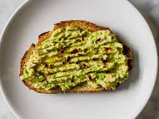

Avocado Toast Recipe

Description
This creamy avocado toast recipe consists of two main ingredients, making it a quick and easy summertime snack
or a great breakfast option! Keep the recipe simple with just the avocado and toast, or add some zest with some
salt and lemon! The choice is yours.
Ingredients:
- 1 Avocado
- 1 - 2 Slices of bread
- A pinch of salt (optional)
- 3 - 5 Drops of lemon (optional)
Steps:
- 1. Take out the number of desired pieces of bread and place it/them in your toaster.
- 2. Set your toaster to the desired toast setting and start your toaster.
- 3. Carefully cut open your avocado in half and take out the pit.
- 4. On a cutting board, cut your avocado into squares and remove the peel from the back of your avocado halves.
- 5. Place your avocado pieces into a bowl, and with the back of a spoon, mash the avocado squares together.
- 6. This step is optional: Add a pinch of salt and a few drops of lemon to your avocado mash and mix. Taste occassionally until desired taste has
been reached.
- 7. Remove your piece"(s)" of toast and place them on a plate.
- 8. Spread your avocado mash on your toast, and you're done!